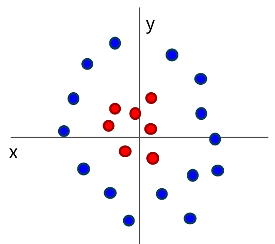
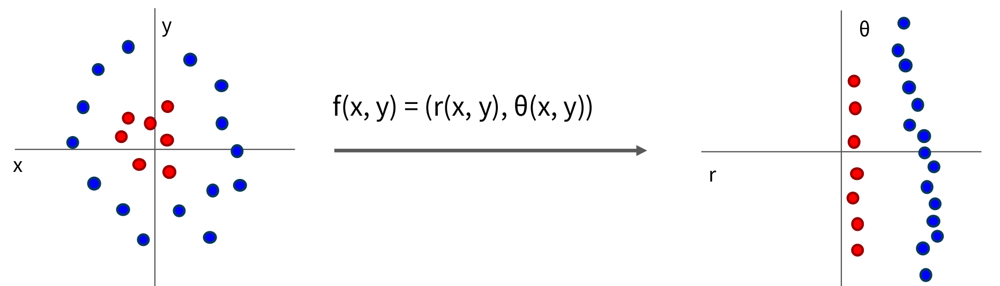
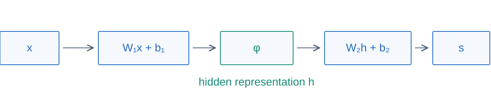
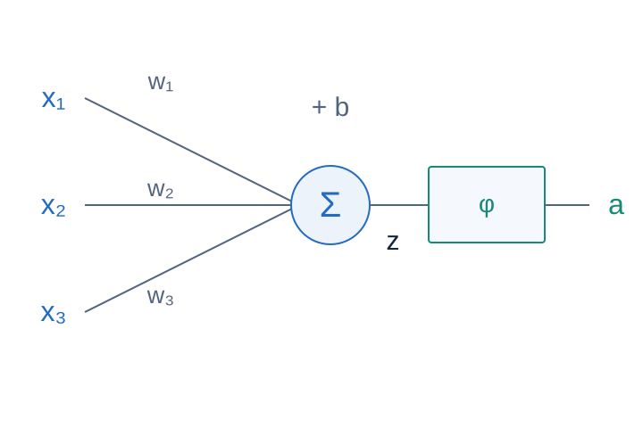
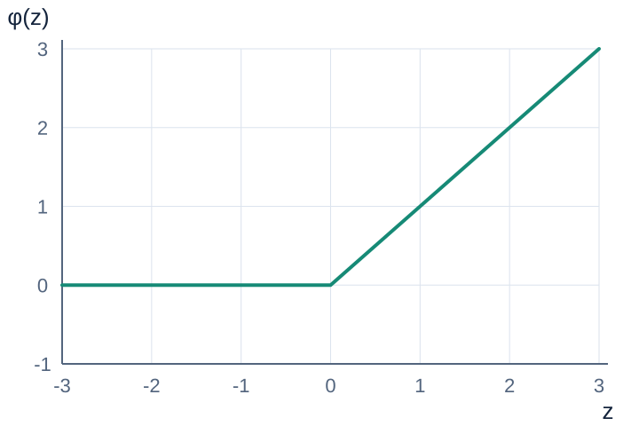
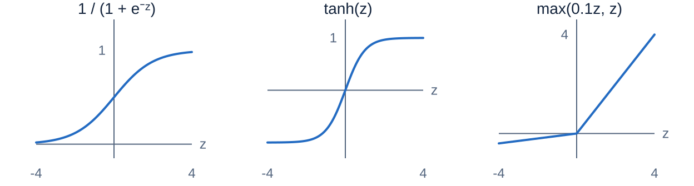
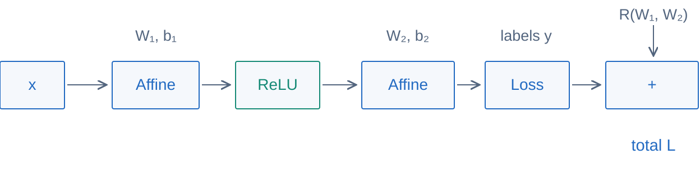

Uniform sampling gives an unbiased data-gradient estimate at fixed θt.
“SGD” commonly includes minibatches; strict single-example SGD has B=1.
One minibatch, one concrete SGD step
Two sampled examples give data gradients:
g(1)=(2,−4)⊤,g(2)=(0,−2)⊤
Start at θt=(2,−1)⊤, use η=0.1, and set λ=0.
gt=21(g(1)+g(2))=(1,−3)⊤
θt+1=(2,−1)⊤−0.1(1,−3)⊤=(1.9,−0.7)⊤
Illustrative sample gradients. This update need not reduce the full training loss.
The SGD training loop
# X: (N, D), y: (N,); theta contains weights and biases
for epoch in range(num_epochs):
order = rng.permutation(N)
for ids in minibatches(order, batch_size):
loss, grads = loss_and_grad(X[ids], y[ids], theta)
for name in theta:
theta[name] -= learning_rate * grads[name]
Iteration: one update. Epoch: one pass through the training set.
With N=50,000 and B=100, one epoch has 500 updates.
A minibatch trades computation for noise
Same start, objective, and learning rate η=0.1.
30 updates; fixed random sample sequence.
Synthetic quadratic: noise shrinks as the batch grows. Larger batches cost more per update.
Monitor learning, then validate choices
Loss rises or diverges
Check the learning rate, gradients, and numerical stability.
Loss barely changes
Check the learning rate, data pipeline, and gradient flow.
Training improves; validation worsens
Check overfitting, regularization, and stopping time.
Use validation data to compare settings; reserve test data for final evaluation.
A noisy training curve is expected with minibatches. Inspect trends across many updates.
A brief look at other optimizers
Method
Main idea
Momentum
Accumulate past gradients to smooth the direction.
AdaGrad / RMSProp
Scale coordinates using past squared gradients.
Adam
Combine momentum and adaptive coordinate scaling.
They address issues such as narrow valleys, uneven scales, and gradient noise.
They still need a learning rate. No optimizer is best for every problem.
Neural networks
Keep the loss and the training loop. Replace fixed features with a learned nonlinear mapping.
Linear boundaries have limits

A linear score difference gives a hyperplane in the input coordinates.
Some classes require a nonlinear feature transform.
Instead of choosing that transform by hand, can we learn it from data?
Transform features to separate classes

The classifier may be linear in ϕ(x) while nonlinear in the original input x.
Here the feature transform is designed by hand. An MLP learns its hidden features.
An MLP learns features, then class scores
h=ϕ(W1x+b1),s=W2h+b2

MLP: multilayer perceptron; also called a fully connected network.
The activation ϕ is nonlinear and acts element by element.
Affine layers alone still give an affine map
s=W2(W1x+b1)+b2
s=WeffW2W1x+beff(W2b1+b2)
Without a nonlinear activation, extra layers do not create nonlinear decision boundaries.
With biases, “affine” is the precise term. The decision boundary is still a hyperplane.
Track the shapes through an MLP
x∈RD, h∈RH, s∈RK.
Parameter
Shape
W1,b1
H×D,H
W2,b2
K×H,K
Parameter count: HD+H+KH+K.
A neuron: weighted sum, then activation

z=w⊤x+ba=ϕ(z)
Weights select an input direction; the bias sets a threshold.
The biological analogy is loose. This is a mathematical computation.
Calculate a complete forward pass
x=[1−2],W1=[1−1−11],b1=0W2=[1−1−11],b2=0
z=W1x=[3−3],h=ReLU(z)=[30]
s=W2h=[3−3]
Predict class 1. If class 1 is true, softmax cross-entropy is log(1+e−6)≈0.00248.
ReLU introduces a useful nonlinearity

ReLU(z)=max(0,z)
Positive inputs pass through; negative inputs become zero.
Its slope is 1 on the positive side and 0 on the negative side.
A unit that stays negative receives no gradient through ReLU.
Compare activation functions

Sigmoid
Output in (0,1); saturates at both ends.
tanh
Output in (−1,1); also saturates.
Leaky ReLU
A small nonzero slope for negative inputs.
These act inside hidden layers. Classifier output scores remain unrestricted.
Two ReLU features can solve XOR
h1=max(0,x1−x2) h2=max(0,x2−x1)
Class 1 score: s1=h1+h2. Class 0 score: s0=0.5.
The input points (0,0) and (1,1) coincide at hidden point (0,0).
Capacity and generalization
Width and depth enlarge the set of functions a network can represent.
Training fit
A flexible network can fit complicated patterns—and noise.
Validation performance
Use held-out data to choose capacity, regularization, and training time.
L(θ)=N1i∑Li(fθ(xi),yi)+2λℓ∑∥Wℓ∥F2
A lower training loss alone does not establish a better classifier.
Represent computation as a graph

Nodes are operations. Edges carry intermediate values.
Forward: compute the loss. Backward: compute how each parameter affects it.
Backpropagation follows the chain rule
A small scalar graph:
q=a+b,L=qc
a=−2,b=5,c=−4.
Forward: q=3, L=−12.
∂a∂L=−4,∂b∂L=−4,∂c∂L=3
At each node: upstream gradient × local derivative. Sum gradients from multiple paths.
Automatic differentiation in the training loop
# PyTorch sketch: scores are logits, labels are 0 ... K-1
optimizer = torch.optim.SGD(model.parameters(), lr=0.1)
for xb, yb in loader:
optimizer.zero_grad()
scores = model(xb)
loss = F.cross_entropy(scores, yb)
penalty = sum((p * p).sum() for p in model.parameters()
if p.ndim > 1) # this MLP’s weight matrices
(loss + 0.5 * lam * penalty).backward()
optimizer.step()
Clear old gradients → forward → backward → update. Validate without parameter updates.
Connect the whole training system
Minibatch (XB,yB)
→
MLP scores fθ(XB)
→
Objective LB+R
New parameters θ−ηg
←
Gradient g=∇θ(LB+R)
←
Backpropagation chain rule
Architecture defines the computation; loss defines the goal; SGD makes the update.
Five ideas to take away
Objective: combine classification loss and weight regularization.
SGD: estimate a gradient from a minibatch, then update.
MLP: compose learned affine maps and hidden features.